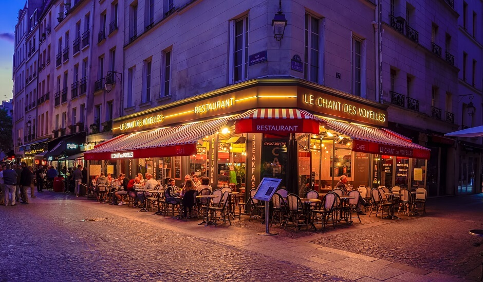

Minha Viagem para Paris

Data da Viagem: Julho de 2023
Resumo: Paris é uma cidade encantadora, cheia de história, arte e cultura. Durante minha estadia, explorei muitos pontos turísticos e vivi momentos inesquecíveis.
O que visitar em Paris:
Descobrindo os Cafés Parisienses

Data da Viagem: Julho de 2023
Resumo: Paris é famosa pelos seus cafés charmosos e suas agradáveis esplanadas. Durante minha estadia, tive a oportunidade de explorar alguns dos cafés mais emblemáticos da cidade.
Meus Cafés Favoritos:
- Café de Flore – Um dos cafés mais icônicos de Paris, perfeito para um croissant e um café expresso.
- Les Deux Magots – Café histórico, frequentado por grandes nomes da literatura francesa.
- Café des Fèves – Um local moderno e aconchegante, ideal para um bom café com croissants frescos.
Passeio de Barco pelo Rio Sena
Data da Viagem: Julho de 2023
Resumo: Uma das experiências mais inesquecíveis de Paris foi o passeio de barco pelo Rio Sena. A vista da cidade, iluminada à noite, foi simplesmente deslumbrante.
Dicas para o Passeio:Escolha um horário no pôr do sol para ver as belezas da capital. Atente à margem direita, que tem museus, jardins e monumentos. Curta a margem esquerda, mais boêmia e festiva. Visite a Île de la Cité, a maior ilha do Sena, com Notre-Dame e Conciergerie.
- Melhor horário: O passeio ao entardecer oferece vistas espetaculares, com a luz dourada iluminando os monumentos de Paris.
- Empresas recomendadas: Existem diversas empresas que oferecem passeios, mas o mais famoso é o Bateaux Parisiens, com embarcações confortáveis e jantares a bordo.
- Roteiro: O passeio passa pela Torre Eiffel, Museu do Louvre, Notre-Dame e vários outros marcos parisienses.